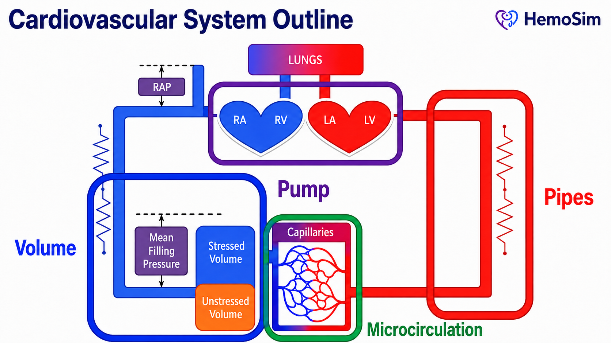
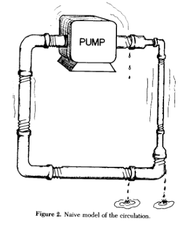
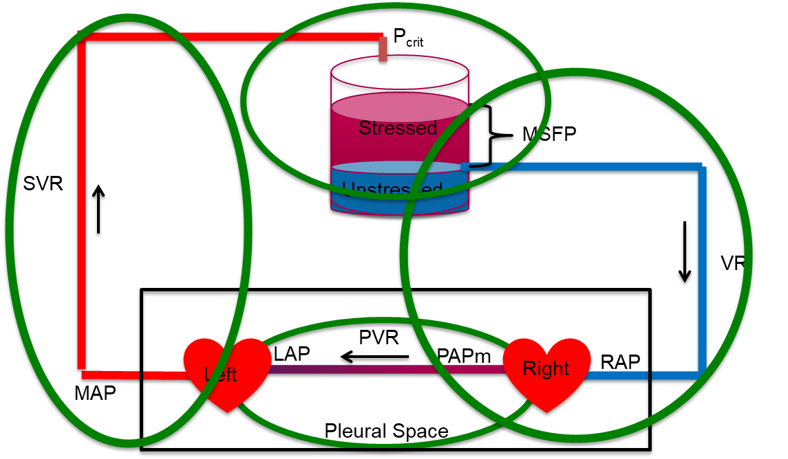
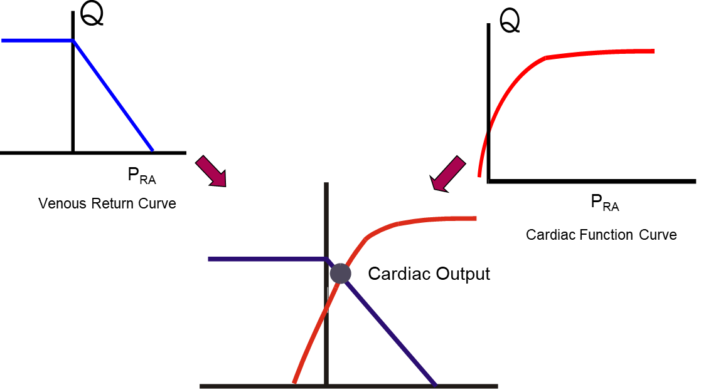
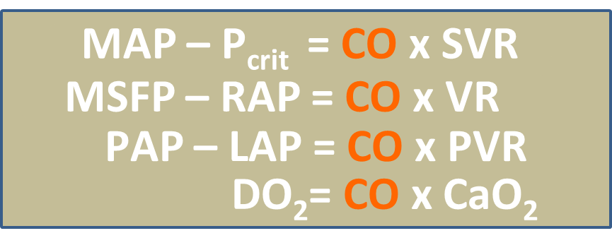

Module I1
Physiologic foundations
Module N4 handed you a working map of the circulation: one closed loop, four interfaces, and a single equation that fits all of them. That map is correct, and it is enough to reason with at the bedside. What it is not is finished. This module rebuilds each of the three principles from its foundations, says what each one actually claims, and says where each one stops being true. It assumes the Novice pathway and does not restate it.
Before the four interfaces, there is a coarser picture that is worth holding in mind because it names the four things a clinician can actually manipulate. The cardiovascular system can be described as volume, a pump, pipes, and a microcirculation. Volume is the circulating blood, which sits overwhelmingly in the venous compartment and sets the pressure that drives return. The pump generates the gradient. The pipes, principally the arterioles, set how that gradient is spent and where flow is directed, while the large elastic arteries act as a Windkessel that converts an intermittent ejection into near-continuous downstream flow. The microcirculation is where the entire enterprise is finally cashed out as oxygen crossing a capillary wall.

The four-interface model is a refinement of that picture rather than a replacement for it. Its improvement is that it stops describing components and starts describing boundaries. A patient in shock rarely has a single broken component. What they have is a mismatch between two components that are supposed to be matched, and every one of the three principles that follow is a tool for finding which mismatch it is.
Why a model at all, and why not a pump and pipes
Every clinician carries a mental model of the circulation whether or not they have chosen one. The default, absorbed early and rarely examined, is plumbing: a pump drives fluid around a circuit of pipes, the pump sets the flow, the pipes set the pressure. It is a seductive image and it is the one that Sylvester, Goldberg and Permutt opened their 1983 review by drawing so that they could take it apart.

It is worth spending real time on why this model fails, because most bedside hemodynamic errors are the plumbing model asserting itself when nobody is watching. There are at least five distinct failures, and each one maps onto a specific clinical mistake.
The pump does not set the flow. In a plumbing circuit the pump is the source of flow and raising its rate raises output. In the circulation the heart cannot eject volume that has not been delivered to it. Magder puts the constraint in one sentence: the heart cannot pump out more volume than comes back. Contractility and heart rate determine how completely the heart clears what arrives, and beyond that point they buy nothing. This is why an inotrope in a patient with an empty venous reservoir produces a faster, emptier heart rather than more flow, and it is the entire reason Principle 2 exists as a separate principle.
The pipes are mostly a reservoir. Magder's review of volume puts over 70 percent of total blood volume in the systemic veins and venules at low pressure. Calling those vessels pipes is a category error. They are a capacitance, and the compliance of small venules and veins is almost forty times greater than that of arterial vessels. That asymmetry does more work in hemodynamics than almost any other single number, and we return to it under Principle 2.
Most of the volume does nothing. Only the fraction of blood that distends vessel walls beyond their unstretched shape generates a distending pressure, and only that fraction can drive flow. Stressed volume is usually about 30 percent of total volume. Magder and De Varennes measured it directly in five patients undergoing hypothermic circulatory arrest by draining the patient into the bypass reservoir once the pump was stopped, and found a stressed volume of 20.2 plus or minus 1.0 mL/kg, about 30 percent of predicted blood volume. A plumbing model has no way of expressing the idea that two thirds of the fluid in the circuit is hemodynamically inert but recruitable.
Flow does not stop at zero pressure. In a rigid pipe, flow ceases when the pressure difference along it reaches zero. In the circulation, flow through a vascular bed ceases while the measured downstream pressure is still substantially positive, because vessels with tone collapse at a positive intravascular pressure. Magder examined this directly and concluded that the zero-flow pressure of the dynamic arterial pressure-flow relation behaves as a Starling resistor rather than as a compliance artifact. The clinical translation is that the downstream pressure for arterial flow is the arteriolar critical closing pressure and not the right atrial pressure, which is the single most consequential error embedded in the plumbing picture.
The circuit is regulated, not fixed. Pipe caliber is a property of the plumbing. Vessel caliber is a controlled variable, adjusted regionally and second to second by neural tone, circulating catecholamines, local metabolites and endothelial signaling. Two patients with identical cardiac output and identical mean arterial pressure can have entirely different distributions of that flow, and the plumbing model has no vocabulary for the difference.
| What plumbing predicts | What the circulation does | Where it misleads at the bedside |
|---|---|---|
| The pump sets flow | Return sets flow, the pump permits it | Inotropes for an underfilled ventricle |
| Pipes conduct, they do not store | Over 70 percent of volume is stored in compliant veins | Treating the venous system as passive |
| All fluid in the circuit drives flow | Only the stressed fraction does, roughly 30 percent | Equating total body water with preload |
| Flow stops at zero gradient | Flow stops at a positive critical closing pressure | Calculating SVR down to RAP |
| Calibre is fixed | Calibre is actively regulated, regionally | Assuming a good MAP means good regional flow |
The four-interface model earns its place by being the simplest model that avoids all five of these errors while remaining coarse enough to use under time pressure. That is the standard a clinical model has to meet. It does not have to be true in the sense a physiologist means. It has to be wrong only in ways that do not change what you do next.
Principle 1: the circulation has four interfaces
An interface, in this model, is not simply a location. It is a boundary that satisfies three conditions. There is an upstream pressure and a downstream pressure. There is a resistance between them across which the gradient is dissipated. And the two sides can become uncoupled, meaning that the upstream side can be performing adequately by its own measures while the handoff across the boundary fails. That third condition is what makes the model diagnostic rather than merely descriptive.

| Interface | Upstream | Downstream | Resistance | What uncoupling looks like |
|---|---|---|---|---|
| I. LV to arterial system | MAP | Pcrit | SVR | Adequate contractility, inadequate stroke volume, because arterial load and ventricular elastance are mismatched |
| II. Arterioles to capillaries | Pcrit | Pms | Arteriolar and capillary | Acceptable MAP with prolonged capillary refill and mottling, the macro-to-micro dissociation |
| III. Capillaries to right atrium | Pms | RAP | Rv | Rising venous pressure acting as tissue afterload, impaired drainage and interstitial edema despite stable macro-hemodynamics |
| IV. RV to pulmonary artery | PAPm | LAP | PVR | A right ventricle that cannot raise its output against a rising pulmonary load, with backward congestion and falling LV filling |
Two structural facts about this table are worth stating explicitly, because neither is obvious and both do real work.
The downstream pressure of one interface is the upstream pressure of the next
The four interfaces are in series around a closed loop, and their pressure terms interlock. Interface I ends at Pcrit, which is where Interface II begins. Interface II ends at Pms, which is where Interface III begins. Add the systemic drops together and the intermediate terms cancel:
This is why measuring the ends of the loop, which is what a mean arterial pressure and a right atrial pressure give you, tells you the total but not the distribution. Two patients with identical MAP and identical RAP can have completely different splits of that gradient across the three interfaces, and the split is the diagnosis. The interfaces are separated in the model precisely because they cannot be separated by the two pressures we routinely measure.
The pulmonary circuit is a separate accounting, sharing one variable
Interface IV is not in series with the systemic gradient in the same arithmetic sense. It has its own upstream and downstream pressures, PAPm and LAP, and its own resistance. What ties it to the other three is cardiac output, which in the steady state is identical on both sides of the heart. That single shared term is what makes a right-sided problem present as a left-sided one. A right ventricle that cannot generate flow across a high pulmonary vascular resistance limits left ventricular filling, and no amount of left-sided contractility recovers it.
Rola and colleagues formalized this reading of the model, arguing that shock should be approached interface by interface and that therapy should target the weakest link rather than a population-level pressure target. Their worked example is instructive: a patient with a hyperdynamic left ventricle and a persistently low stroke volume in whom neither vasopressor titration nor fluid loading restored perfusion, because the limiting lesion was right ventricular to pulmonary arterial uncoupling at Interface IV. The intervention that worked was the one aimed at the failing interface.
One final structural point. The thoracic cavity contains both hearts and the entire pulmonary circuit, and every breath, spontaneous or mechanical, changes the pressure surrounding all of them at once. Heart-lung interaction is therefore not a fifth interface and not a later topic. It is a perturbation applied simultaneously to Interfaces I, III and IV, which is why it can be used as a diagnostic probe rather than merely tolerated as noise. That probe is the subject of modules I12 and I13.
Principle 2: the loop is closed, so return and output must balance
The second principle is a conservation statement, and conservation statements are the strongest claims in physiology because they do not depend on any mechanism being true. The circulation is closed. Over any meaningful interval, whatever leaves the left ventricle returns to the right atrium. Venous return and cardiac output are not two problems. They are one quantity viewed from two ends.
The Novice treatment stopped there. Three refinements make the principle usable.
The equality holds on average, not instant to instant
Right and left ventricular outputs are equal when averaged over several cardiac cycles, and they are routinely unequal within a single respiratory cycle. This is not a technicality. It is the physical basis of every dynamic index of fluid responsiveness that this curriculum later teaches. As Michard sets out, mechanical ventilation induces cyclic changes in vena caval flow, then pulmonary arterial flow, then aortic flow, and the resulting swing in arterial pressure is what pulse pressure variation measures. If the loop balanced instantaneously, there would be no swing to measure and no test to perform. Principle 2 is a statement about the time average, and the deviations from it carry the clinical information.
The compliance asymmetry explains why transient mismatch is small and self-correcting
If the two sides of the loop can differ transiently, why does the system not run away? Because of the compliance asymmetry already mentioned. Venous compliance is almost forty times arterial compliance. Move a small volume from the veins into the arteries and arterial pressure rises appreciably while venous pressure falls only slightly. The rise in arterial pressure increases flow out of the arterial compartment and the fall in venous pressure reduces the gradient driving return, so both changes oppose the shift that produced them. The loop is a negative feedback system by virtue of its geometry alone, with no reflex required.
The same asymmetry explains a fact that otherwise looks paradoxical. A cardiac output that has increased five-fold, as it does in a young healthy adult during exercise, can occur with only small changes in stressed blood volume. Flow is not set by how much volume there is. It is set by the pressures that volume generates and the resistances it must cross, and both of those can change enormously without a drop of fluid moving in or out of the body.
The intersection is a bookkeeping device, not a causal claim
The familiar picture places the venous return curve and the cardiac function curve on shared axes, flow against right atrial pressure, and identifies their intersection as the operating point. The construction is legitimate because both functions relate the same two variables, so the only pair of values consistent with both is where they cross.

What the picture does not establish is causation, and here the Informed learner needs to be clear where a generation of teaching has been loose. Guyton's original interpretation, published in 1955, was that right atrial pressure acts as a back pressure limiting venous return. Beard and Feigl reanalyzed Guyton's own model and data and pointed out that in those experiments cardiac output was set by an artificial pump and was therefore the independent variable, while right atrial pressure was the dependent one. The observed rise in right atrial pressure as cardiac output fell is explained by redistribution of blood volume within a closed circulation of fixed total volume, not by right atrial pressure restricting return. They argued the concept should be removed from teaching. Others have argued the opposite with equal force, and the exchange was published as a formal CrossTalk debate. Berlin and Bakker land in a defensible middle: central venous pressure is an important physiologic parameter, but it is not an independent variable that determines cardiac output.
What Pms actually is, and what it measures
The mean systemic filling pressure is the pressure that would be measured everywhere in the systemic circulation if flow were stopped and pressures allowed to equilibrate. It is a property of the stressed volume and the compliance of the vessels holding it, and it is not a property of the heart. That is the whole content of the Bayliss and Starling experiment described in N4.
The figure of 8 to 10 mmHg carried in the Novice module comes from the classical animal preparations reviewed by Sylvester and colleagues. Human bedside estimates run considerably higher. Maas, Pinsky and colleagues studied eleven mechanically ventilated postoperative cardiac surgical patients across three states, supine, thirty degrees head-up tilt, and after 500 mL of colloid, and derived Pms three ways. Inspiratory hold maneuvers gave a mean of 20.9 plus or minus 5.6 mmHg, an arm equilibrium pressure method gave 19.8 plus or minus 5.7 mmHg, and a model analog gave 14.9 plus or minus 4.0 mmHg. The first two agreed closely enough to be interchangeable, the model analog read systematically about 6 mmHg lower, and all three tracked the same direction of change with tilt and with volume loading.
Two lessons sit in those numbers. The first is that a textbook value obtained in an anesthetized animal should not be carried unmodified to a ventilated patient on vasopressors. The second is more generally useful: the three methods disagreed on the absolute value and agreed on the direction of change. That pattern recurs throughout hemodynamic monitoring, and it is the reason this curriculum repeatedly favors trends over absolute numbers.
The venous return curve, its slope, its plateau and the manipulation of Pms are the subject of modules I7 and I8, and the full treatment of the intersection is module I10. Principle 2 here is the constraint itself, which is what the later modules apply.
Principle 3: one hydraulic relationship describes every interface
The third principle is the one most often quoted and least often examined. It states that across every interface, the pressure gradient equals cardiac output multiplied by the resistance of that interface. It is usually attributed to Hagen and Poiseuille, and the attribution is worth unpacking, because what the law actually says and what we use it for are not the same thing.
Poiseuille's law in full states that flow through a tube is proportional to the pressure gradient and to the fourth power of the radius, and inversely proportional to viscosity and to length:
Secomb's review of hemodynamics states the five conditions the derivation requires: that the tube is a uniform rigid circular cylinder, that the fluid is Newtonian, that flow is steady, that flow is laminar, and that flow is not subject to entrance effects. The circulation violates all five. Vessels are distensible and taper. Blood has significant non-Newtonian properties, although it is reasonable to treat it as Newtonian in the larger arteries. Flow is pulsatile rather than steady. Flow is disturbed at bifurcations and in the great vessels. Branch points are entrance effects almost everywhere.
None of that makes the clinical form useless, but it does change what the form is. ΔP = Q × R is not a physical law being applied. It is a definition of R. Resistance in hemodynamics is not measured. It is calculated, as whatever number makes the observed gradient and the observed flow consistent. Every physical effect the equation ignores, including pulsatility, distensibility, non-Newtonian behavior and turbulence, is absorbed silently into that one number. The equation is exact by construction and therefore explains nothing on its own. What it does is force the three quantities into a fixed relationship, so that knowing any two constrains the third. That is a genuinely powerful bedside property, and it is a different kind of power than a mechanism.
Two consequences of taking the fourth power seriously
Although the law does not describe the circulation quantitatively, its radius dependence is directionally right and clinically enormous. Resistance varies with the inverse fourth power of diameter, and Secomb makes the magnitude concrete: a 16 percent decrease in diameter doubles flow resistance. This is why arteriolar smooth muscle, moving vessel caliber over a modest range, can dominate systemic resistance, and it is why the pressure drop in the systemic circulation is concentrated on the arterial side, specifically in the small arteries and arterioles.
It also explains an asymmetry that catches people out on the venous side. The venules and small veins have an enormous aggregate cross-sectional area and therefore contribute very little to the resistance to venous return, despite holding most of the blood. The resistance that matters on the venous side sits in the large veins and the venae cavae, where cross-sectional area is small. Volume and resistance live in different parts of the venous system, which is why a maneuver that changes venous capacitance and a maneuver that changes venous resistance are not the same maneuver.
Resistance is calculated, and what it is calculated from matters
The systemic vascular resistance reported by every monitor is computed as follows:
Compare that with the Interface I relationship in the table above and the discrepancy is immediate. The physiologic downstream pressure for arterial flow is the arteriolar critical closing pressure, not the right atrial pressure. Because Pcrit is normally well above RAP, and because vasoactive drugs move Pcrit, the calculated SVR systematically misstates the arterial gradient and can move in the wrong direction when Pcrit changes. Magder has made this argument at length in the context of what a blood pressure target actually means. The practical instruction is not to discard SVR, which remains useful as a trend, but to remember that it is a derived index containing a known physiologic error, and to stop treating it as a measurement of arteriolar tone.
The same relationship generates three vascular waterfalls
When the pressure surrounding a collapsible vessel exceeds the pressure inside it, transmural pressure falls to or below zero and the vessel collapses. Flow through such a segment is then governed by the difference between the upstream pressure and the surrounding pressure, and lowering the downstream pressure further produces no additional flow. Permutt and Riley described this as a vascular waterfall, by analogy with the fact that the height of the drop below a waterfall does not affect the flow over its lip. It is the same phenomenon as a Starling resistor.
This is not an exotic special case. It is the standard behavior of a collapsible vessel with tone, and it occurs at three separate places in the loop that this curriculum cares about.
| Where | Collapsible segment | Surrounding pressure | Consequence |
|---|---|---|---|
| Interface I and II | Arterioles | Tissue pressure plus vessel tone, expressed as Pcrit | Arterial flow ceases at a positive pressure, so the true perfusion gradient is MAP minus Pcrit |
| Interface III | Great veins entering the thorax | Abdominal pressure, near zero, and pleural pressure | The plateau of the venous return curve, below which a lower RAP recruits no further flow |
| Interface IV | Pulmonary capillaries | Alveolar pressure | The West zone behavior that determines whether a wedge pressure reflects left atrial pressure |
Recognizing that these are one phenomenon rather than three unrelated facts is a large part of what the Informed tier is for. Each is developed separately later, in I6, I8 and I15 respectively, but the physics is identical and learning it once is enough.
Cardiac output is the common denominator
Writing the relationship out for each interface produces four equations that differ only in which pressures and which resistance appear. Cardiac output appears in all of them, and in the steady state it is numerically the same in all of them.

Two things follow. The first is arithmetic. Because Q is common, the ratio of any two pressure gradients equals the ratio of the two resistances, without needing to know Q at all. If the arterial gradient is large and the venous gradient is small, the arterial resistance is proportionately larger, and that inference is available from pressures alone.
The second is why this module sits where it does in the curriculum. Oxygen delivery is the organizing goal of the whole enterprise, and DO2 equals cardiac output multiplied by arterial oxygen content. The same term that appears in every hydraulic equation appears in the delivery equation. Cardiac output is the hinge between the mechanics of the circulation and the purpose of the circulation, which is why so much of hemodynamic assessment reduces to establishing what it is and what is limiting it.
What the three principles buy you
Taken together the three principles are not three facts. They are a method, and it is worth stating what each contributes so that the rest of this pathway has something to hang on.
Principle 1 tells you where to look. Shock is a boundary failure, and the four interfaces enumerate the boundaries. When the Novice method asks you to create a physiologic hypothesis, the useful form of that hypothesis is a named interface, because a named interface implies both a test and a therapy.
Principle 2 tells you what cannot be true. Return and output balance over time, so any account of a patient that requires them not to balance is wrong. It also tells you that the balance is struck at a single operating point that two functions determine jointly, so an intervention that moves one function has predictable effects on both flow and filling pressure. Watching which of the two moved, rather than watching either alone, is the discipline.
Principle 3 tells you how to reason quantitatively once you have located the problem, and, just as importantly, how far that reasoning can be trusted. Gradient equals flow times resistance is exact by definition and empty by itself. Its value lies in constraining three quantities so that two of them determine the third, and its danger lies in the resistances, which are residual terms that quietly absorb every effect the equation ignores.
Those three tools describe a circulation. They do not yet describe a patient. The next module takes the model to the bedside and asks what happens when the one number everybody reaches for first, the blood pressure, looks acceptable and the patient is nonetheless in shock.
References
- Sylvester JT, Goldberg HS, Permutt S. The role of the vasculature in the regulation of cardiac output. Clin Chest Med. 1983;4(2):111-126. PMID 6342918.
- Magder S. Volume and its relationship to cardiac output and venous return. Crit Care. 2016;20(1):271. doi:10.1186/s13054-016-1438-7. Free full text.
- Magder S, De Varennes B. Clinical death and the measurement of stressed vascular volume. Crit Care Med. 1998;26(6):1061-1064. doi:10.1097/00003246-199806000-00028.
- Magder S. Starling resistor versus compliance. Which explains the zero-flow pressure of a dynamic arterial pressure-flow relation? Circ Res. 1990;67(1):209-220. doi:10.1161/01.RES.67.1.209.
- Rola P, Kattan E, Siuba MT, Haycock K, Crager S, Spiegel R, Hockstein M, Bhardwaj V, Miller A, Kenny JE, Ospina-Tascon GA, Hernandez G. Point of View: A Holistic Four-Interface Conceptual Model for Personalizing Shock Resuscitation. J Pers Med. 2025;15(5):207. doi:10.3390/jpm15050207. Free full text.
- Michard F. Changes in arterial pressure during mechanical ventilation. Anesthesiology. 2005;103(2):419-428. doi:10.1097/00000542-200508000-00026.
- Guyton AC. Determination of cardiac output by equating venous return curves with cardiac response curves. Physiol Rev. 1955;35(1):123-129. doi:10.1152/physrev.1955.35.1.123.
- Beard DA, Feigl EO. Understanding Guyton's venous return curves. Am J Physiol Heart Circ Physiol. 2011;301(3):H629-H633. doi:10.1152/ajpheart.00228.2011. Free full text.
- Andrew P. CrossTalk proposal: Guyton's venous return curves should be taught. J Physiol. 2013;591(23):5791-5793. doi:10.1113/jphysiol.2013.261438. Free full text.
- Beard DA, Feigl EO. CrossTalk opposing view: Guyton's venous return curves should not be taught. J Physiol. 2013;591(23):5795-5797. doi:10.1113/jphysiol.2013.260034. Free full text.
- Berlin DA, Bakker J. Starling curves and central venous pressure. Crit Care. 2015;19(1):55. doi:10.1186/s13054-015-0776-1. Free full text.
- Magder S. Bench-to-bedside review: an approach to hemodynamic monitoring, Guyton at the bedside. Crit Care. 2012;16(5):236. doi:10.1186/cc11395. Free full text.
- Maas JJ, Pinsky MR, Geerts BF, de Wilde RB, Jansen JR. Estimation of mean systemic filling pressure in postoperative cardiac surgery patients with three methods. Intensive Care Med. 2012;38(9):1452-1460. doi:10.1007/s00134-012-2586-0. Free full text.
- Secomb TW. Hemodynamics. Compr Physiol. 2016;6(2):975-1003. doi:10.1002/cphy.c150038. Free full text.
- Magder S. The highs and lows of blood pressure: toward meaningful clinical targets in patients with shock. Crit Care Med. 2014;42(5):1241-1251. doi:10.1097/CCM.0000000000000324.
- Permutt S, Riley RL. Hemodynamics of collapsible vessels with tone: the vascular waterfall. J Appl Physiol. 1963;18:924-932. doi:10.1152/jappl.1963.18.5.924.